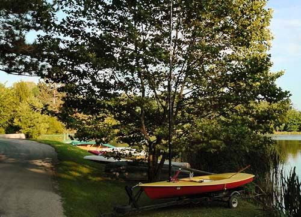

|
Compact Digitals: More DR Than You Might ThinkVersion 1.1, © 2006 by Dale Cotton, all rights reserved We've all seen this before. An otherwise usable snapshot from a compact camera, whether film or digital, ruined by clipped highlights and/or inky shadows:
Fig. 1: Snapshot with clipped DR The culprit is almost universally held to be the narrow exposure latitude (usually referred to as dynamic range or DR) of small cameras. Recently, I fished my ancient 2 megapixel Oly C2020 out of the closet and took the following shot of my computer room window both with it and with my recent 7 mp Panny LX1:
Fig. 2: C2020, f/2.8, 1/250th @ 100 ISO (reduced to fit) I chose the exposure such that the overcast sky and white roof edge seen through the window were blown; while the house siding seen through the window was just shy of blown. As you can see, I spot metered various areas in the frame with an ancient Digi-Spot and recorded the EVs in red. Next, I opened the JPEG in Photoshop. As we'd expect, the room surrounding the window is pretty dim - nothing like what I was seeing with my own eyes. Next, I applied the following curve:
Fig. 3: Photoshop Curves dialogue I made this by clicking near the upper right corner to lock down that part of the "curve", then dragging a few lower points so they expanded the shadow area (lower left of the curve) roughly as much as possible without creating a kink. Here's what happened to the Oly shot when I applied this curve:
Fig. 4: Fig. 2 with the curve in Fig. 3 applied (click to enlarge) This is now closer to what my two little eyes actually see - except that in reality I can see even more detail in the bookcase shadows than we see in the JPEG. When you click on Fig. 4, you can see that there is detail still distinguishable as low as EV 5, which means 7.5 stops DR. I was planning to post parallel pix from the LX1, but the results are so similar (except for the megapixel difference) that it doesn't seem worth the bother. In both cases the real issue is noise: the darker the shadow area, the more intrusive the noise. DR is limited at the bottom end by the lowest point that detail can be distinguished ... but also the lowest point at which you can tolerate the noise. By applying NR - perhaps selectively to just the darkest areas - your results can be quite usable. Here's Fig. 4 with noise reduction done in Noise Ninja, using just the default settings:
Fig. 5: Noise reduction applied to Fig. 4 (click to enlarge) Try this with your own cameras; you should be able to reproduce something like the curve in Fig. 3 with whatever edit app you have. What it all means is what we already know: with digital or slide film, expose for the highlights in contrasty light. Let the midtones and shadows go too dark to retain the highlights; then recover in post processing.  Fig. 6: Snapshot with sufficient DR
|